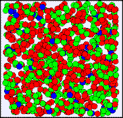
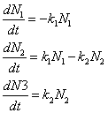

A three-state radioactive sample. Radionuclides change from red to green to blue as they decay.
If the number of nuclides is large, the upper state N1, intermediate state N2, and final state N3 populations obey the following coupled ordinary differential equations (ODEs)

where k1 is the upper state decay rate and k2 is the intermediate state decay rate. The nature of the decay is governed by these decay constants. The Three State Decay model displays both the continuous ODE solution for these nuclide populations as well as a stochastic (probabilistic) solution that assumes integer nuclide populations and uses probability to determine if a radionuclide survives for a time Δt without decaying.
The differential equation model produces continuous decay curves but hides the random and discrete nature of the underlying processes. A stochastic model that "rolls the dice" to determine if a radionuclide decays shows that the continuous model is only an approximation. The simulation computes the probably of decay between states 1->2, 2->3, and 1->3 during the finite time interval Δt. When the simulation is run, these probabilities are applied to each radioactive nucleus to determine if it decays. Note that there is a finite probability that a nuclide decays directly from state 1 to the stable state 3. Nature does not, however, skip state 2. We merely waited too long and the nuclide finished its decay before it was observed in state 2.